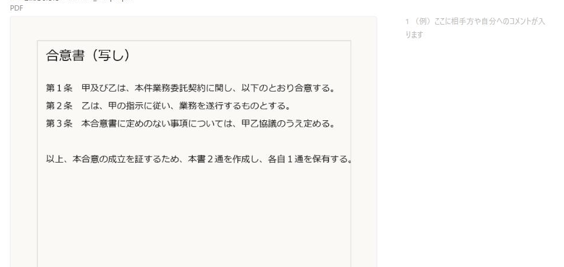

使い方
文章やスクリーンショットの資料に、右側のサイドノートで注釈を付けていく手順です。
-
テキスト・画像・注釈したい範囲を選択すると入力欄が出ます。コメントを書いて色（自分／共有相手／重要）を選ぶと、右側にサイドノートが付きます。同じ範囲に「＋ 返信」で追記もできます。

-
段落にカーソルを乗せると、右側に「＋画像」「×削除」のアイコンが出ます。「＋画像」はその段落の直後に画像を挿入、「×削除」はその段落（画像の場合はその1枚）だけを消します。

-
「開く」でPDFファイルを選ぶと、そのPDFにサイドノートを付けるモードになります。文字が選択できるPDFは範囲選択、スキャンなど文字が選択できないPDFはクリックまたはドラッグでノートの位置を指定します。

その他の操作
- 保存はタイトル＋日時付きの.jsonファイルに書き出します（画像・PDF本体も内包されます）。
- 「続きから再開」はブラウザ内の自動保存を読み込みます（.json保存とは別物で、この端末・このブラウザでのみ有効です）。
- 「新しい作業」は本文・ノート・画像・タイトルを全て消して、別の案件を新規に始めます。
- 「PDF化」は印刷ダイアログを開きます。保存先（プリンター）で「PDFに保存」を選んでください。
- Ctrl＋Sでも「保存」と同じ動作（.json書き出し）になります。